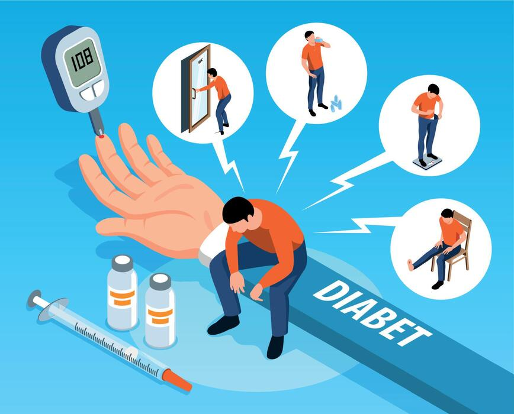
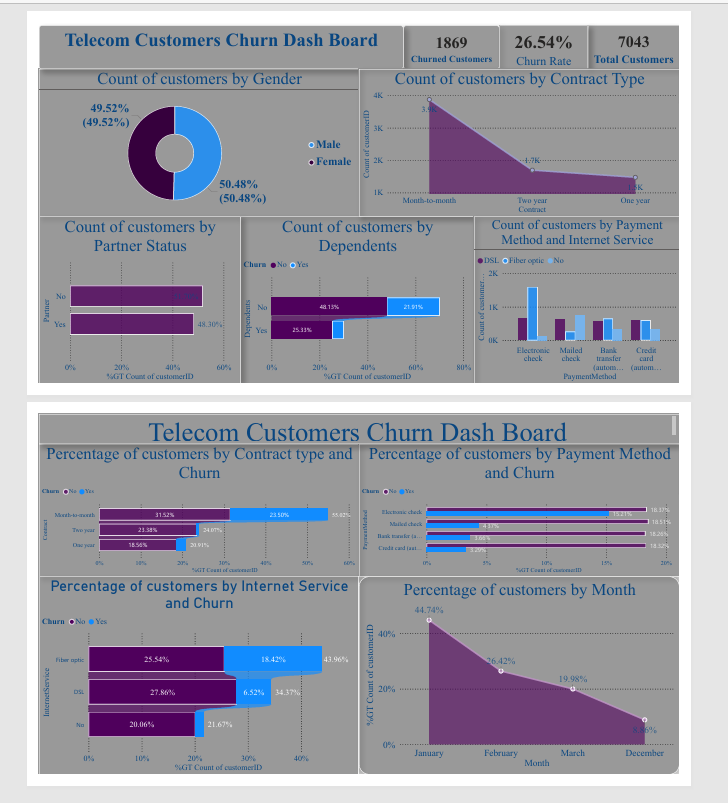

Things I've built
Selected Projects
A selection of data science, machine learning, statistical analysis
and business intelligence projects demonstrating practical application
of quantitative methods.
Business Intelligence
Logistics Operations Intelligence
Optimising Fleet and Logistics Operations Through
Data-Driven Decision Intelligence.
Developed an interactive logistics analytics solution focused
on fleet operations, drivers, trucks, customers, facilities
and operational performance.
Power BI
Data Modelling
DAX
Operational Analytics
Interactive Dashboards

Health Data Science
Diabetes Risk Prediction
Predicting Diabetes Risk Using Routine Clinical
and Anthropometric Indicators.
Applied statistical and machine-learning techniques to investigate
patterns associated with diabetes risk using routinely available
clinical and anthropometric indicators.
Python
EDA
Statistical Modelling
Machine Learning
Model Evaluation

Business Analytics
Customer Churn Analysis & Prediction
Identifying Customer Churn Drivers Through Statistical
Analysis, Predictive Modelling and Business Intelligence.
Analysed customer demographics, contracts, services, payment
behaviour and other characteristics to identify patterns
associated with customer attrition.
Power BI
SQL
Excel
Predictive Analytics
Customer Segmentation
Business Intelligence

Time-Series Analysis
Nigerian Crude Oil Forecasting
Forecasting Nigerian Crude Oil Production and
Exports Using Time-Series Analysis.
Applied time-series methods to examine historical trends
in Nigerian crude oil production, exports and related
economic indicators.
Python
Time-Series Analysis
ARIMA
Forecasting
Model Diagnostics
Economic Data Analysis
COVID-19 Unemployment Analysis in India
Time-Series Analysis of Unemployment Trends During
the COVID-19 Pandemic in India.
Analyzed unemployment trends in India during the COVID-19
pandemic using time-series methods to examine changes in
unemployment patterns over time. The project explored temporal
trends and fluctuations in unemployment and demonstrated the
application of statistical analysis to real-world economic data.
Time-Series Analysis
Trend Analysis
EDA
Statistical Analysis
Data Visualization
Python
Pandas & NumPy
Matplotlib